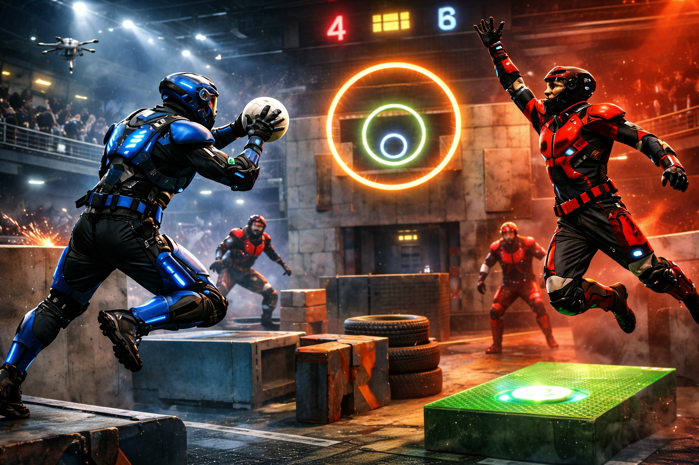

Minimalisme 3D · Animation
DIORAMA
Scroll pour explorer ↓Un phare englouti.
La vie sous toutes ses formes.
Rôle
Modélisation · Rigging · Animation
|
Durée
3 Semaines
|
Outils
Blender
|
Année
2025
01
Le Concept
Un phare immergé, comme si l'océan avait progressivement submergé le paysage. Tous les éléments ont été modélisés pour créer un univers cohérent, avec des poissons riggés et animés qui apportent de la vie à la scène.
Vue d'ensemble · Scène sous-marine stylisée
02
L'Approche Technique
L'océan a été conçu avec un travail poussé sur la transparence, la profondeur et la diffusion. L'éclairage combine sources internes et externes, avec une animation de la lumière du phare qui pulse dans le fond marin.
Détail éclairage · Phare animé
03
Le Résultat
Une animation complète qui explore le shading volumétrique et le rigging dans une approche stylisée et poétique — un écosystème miniature qui respire.
Animation Complète · Rendu Final
3 sem.
De travail
2 poissons
Riggés & animés
1 phare
Qui pulse
100%
Modélisation originale

← Précédent
Interview deMMaIn

Suivant →